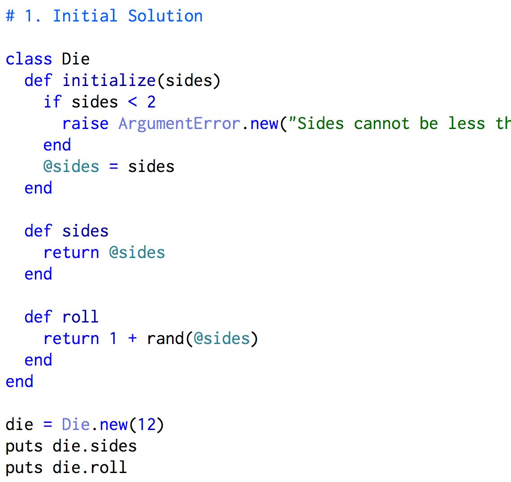
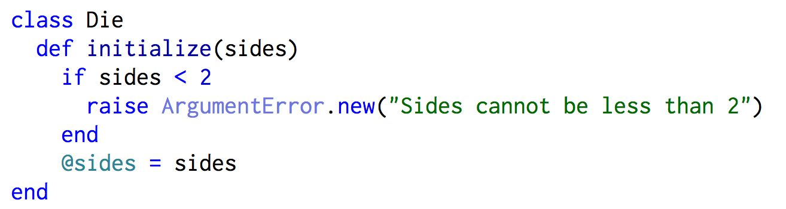
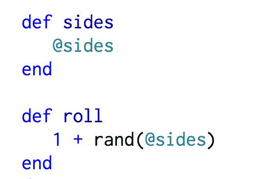

A 'class' structure in Ruby can create one block of code that can be used for a class of objects; like dice. The following image shows us how a class for dice would look.

Looking at the example above, we see that some structures inside it look familiar, and something new: 'initialize.' The 'initialize' component of a class structure gives the class structure the ability to accept an argument, in this case the number of sides of the object/die we want to create. When we 'initialize' the sides, we're telling the class to pay attention to the argument passed to it from the user.

Note: We're also going to tell the class to return an error statement if the sides in the argument are less than 2, because a die with only 1 side is a marble, and there isn't a zero sided die (as far as current metaphysics can tell ;) )
Below the initialize component you see we have structures that look like methods, that's because they are! They're just methods we create inside the class. We can do this repeatedly. Separating code into methods in a class is a great way to organize. But it's not always necessary, just clean, and courteous to other developers who use our code.

Let's take a look at something new here in our class; the '@' symbol. These designate methods and variables as 'instance variables'. By placing the '@' symbol in front of methods and variables when we define them, we can call them in other parts of our class. It's a little confusing though, because in the initialize component above, it says '@sides = sides'. Remember that we're accepting an argument from the user that comes from outside this class. This is called an instance. Putting the @ in front of sides then equating it to 'sides' creates an instance variable. Putting that instance variable in the intialize basically says "whatever the argument for the number of sides, declared by the user, use that argument in the class wherever we see the '@sides'".

Instance methods perform the same way. If we created an '@color' instance method in the class, we could say that the class is to pick a random color from a given set, then when we get output, we can say that the random number returned came from a specific colored die. This may not seem useful in the context of rolling a die; but instance variables are neccessary when crafting more complex classes that face challenges like decoding or creating bingo games.
To wrap up, we can use classes in Ruby to help us peform a specific action repeatedly given challenge. We can give a random number from rolling a die of a specific size, create a list for a baker when given a number of people and their order, heck, even decode a message from North Koreans! Then, when we want to do it again, we just call the class again. Let's roll a die again but from a different size, new order coming in for the baker, Kim Jong Un has sent another coded message to Dennis Rodman...you get the point.
Until next time!